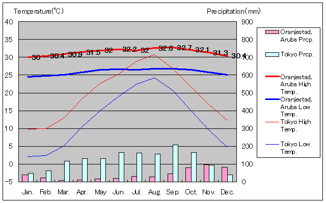

アルバ島はカリブ海に位置し、南アメリカのベネズエラ沿岸から約25km北にあります。 アルバ島は小アンティル諸島の一部であり、オランダ王国の構成国の一つです。長さ約32km、幅約10kmの 小さな島で、首都オラニエスタッドを中心に主要な都市が点在している。
アルバ島はその美しい白砂のビーチとブルーの海で知られています。観光業が主要産業であり、特にパームビーチ やイーグルビーチなどのリゾートエリアが人気です。年間を通じて温暖な気候と、風の少ない穏やかな海が特徴で、 多くの観光客が訪れます。

年間平均気温は約27℃、最低気温は年間を通じて約24℃から約27℃と温暖な気候で、降水量は少なく、平均で約450mmです。
アルバ島では観光業が経済の中心であるため、人間活動は自然環境と密接に関連しています。 持続可能な観光を推進するため、自然保護区の設立や、サンゴ礁の保護活動が行われています。 また、地元の文化と自然資源の共存を目指し、エコツーリズムも推奨されています。
アルバ島の観光は、地域内外からの輸送手段やインフラに大きく依存しています。 島内の交通網は観光客の移動を支える重要な役割を果たしており、国際空港やクルーズターミナルも整備されています。 さらに、周辺諸国との経済的・文化的交流も盛んであり、これが地域全体の発展に寄与しています。
アルバ島は、多様な文化が共存する地域です。ヨーロッパ、アフリカ、南アメリカの影響が強く反映されており、 音楽や料理、言語にもその多様性が表れています。年中行事として、カーニバルや音楽フェスティバル開催され、 観光客にとっても魅力的なイベントが多いです。
アルバは、SDGsに取り組んでいます。特に、環境保護、再生可能なエネルギーの利用促進、観光業の持続可能は発展 を重視しています。これにより、経済成長と自然環境の保全の両立を目指し、次世代に豊かな自然と文化を継承することを 目指しています。